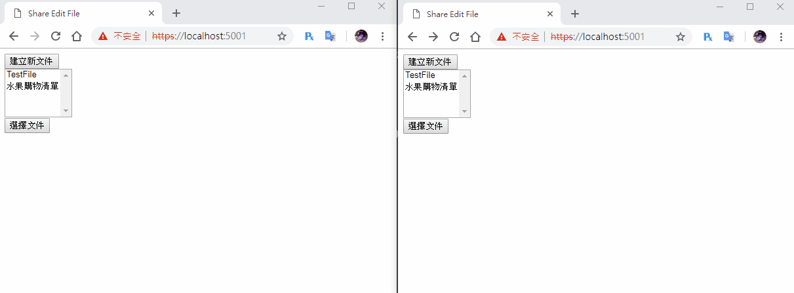
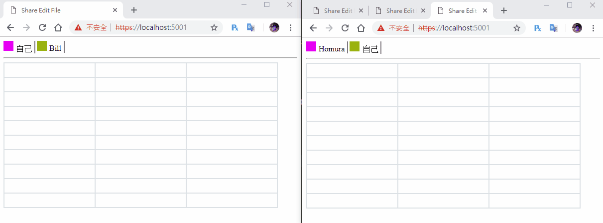

[鐵人賽Day28] 實作Web即時共同編輯文件 (8) - 最後的BUG修正+小功能添加
文章目錄
真的是越複雜的功能，越容易出現不少的BUG，前面做了7篇原本以為我大概的狀況我都有抓到，直到昨天做完發現蠻多BUG，所以今天就來幫這個時做來做最後修正吧！
不同文件間上線名單互相干擾BUG
這個還真的是做完才發現，我們需要新增群組的規則，首先我們要到FileHub取得文件這邊，使用Groups.AddToGroupAsync()把使用者加入群組，然後在傳回上線人員清單時，改成只傳群組內的人，這邊的群組也就等於是哪個文件，所以群組名稱就是使用FileName。
public async Task GetFile(string fileName, string name)
{
// 取得文件
var file = _service.GetFile(fileName);
// 加入使用者
_service.AddUser(fileName, Context.ConnectionId, name);
// 加入群組
await Groups.AddToGroupAsync(Context.ConnectionId,fileName);
// 回傳文件
await Clients.Caller.SendAsync("ReceiveFile", file);
// 回傳同個文件編輯者的上線清單
await Clients.Group(fileName).SendAsync("ReceiveUserList", fileName, _service.GetUserList(fileName));
}
再來編輯文件和取消編輯一樣改成群組傳送
// 編輯文件
public async Task EditText(string fileName, string cellName, string text)
{
var editText = _service.EditFileCell(fileName, cellName, text, Context.ConnectionId);
await Clients.Group(fileName).SendAsync("ReceiveEditText", fileName, cellName, editText.text, editText.editor);
}
// 取消編輯文件
public async Task CancelEditText(string fileName, string cellName)
{
var editText = _service.CancelEditFileCell(fileName, cellName);
await Clients.Group(fileName).SendAsync("ReceiveCancelEditText", fileName, cellName);
}
最後是斷線時的處理，我們新增一個RemoveUser的方法，在斷線時呼叫此方法來移除使用者。
// 斷線時移除使用者
public async Task RemoveUser(string fileName, string name)
{
// 從群組移除使用者
await Groups.RemoveFromGroupAsync(Context.ConnectionId, fileName);
// 移除使用者並重新傳回使用者的表單
await Clients.Group(fileName).SendAsync("ReceiveUserList", fileName, _service.RemoveUser(Context.ConnectionId));
}
// 斷線
public override async Task OnDisconnectedAsync(Exception exception)
{
await base.OnDisconnectedAsync(exception);
}
前端呼叫寫在關閉視窗事件裡，呼叫connection.invoke('RemoveUser')傳回編輯的文件和欄位名。
window.onbeforeunload = function () {
connection.invoke('CancelEditText', LoadFile, editCell).catch(function (err) {
return console.error(err.toString());
});
connection.invoke('RemoveUser', LoadFile, editCell).catch(function (err) {
return console.error(err.toString());
});
DEMO

添加編輯者提示
應該有人會覺得，編輯中表格只是標示顏色當在人很多時，會有找不到是誰的狀況，所以來增加個名字提示功能。
由於之前我們是直接插在Div內，這樣會抓不到名字，所以首先到來修改一下名字區塊，先來定義一下css樣式，新增一個userName
.userName {
display: inline-block;
}
之後在connection.on("ReceiveUserList")的地方，建立一個div區塊塞入剛剛建立的樣式，在把名字塞進去。
// 傳送使用者清單
connection.on("ReceiveUserList", function (fileName, userListData) {
userList.innerHTML = '';
for (var i = 0; i < userListData.length; i++) {
// 略...
var userName = document.createElement('div');
userName.className = 'userName';
if (name == userListData[i].name) {
userName.innerHTML = '自己';
user.appendChild(userName);
}
else {
userName.innerHTML = userListData[i].name;
user.appendChild(userName);
}
userList.appendChild(user);
}
});
然後再修改表格時，connection.on("ReceiveEditText")建立title塞入，因為是第2個div所以要呼叫childNodes[1]。
connection.on("ReceiveEditText", function (fileName, cellName, text, user) {
var cell = document.getElementById(cellName);
// 判斷是否為自己
if (getQueryStringByName('id') != user) {
cell.childNodes[0].value = text;
cell.childNodes[0].title = document.getElementById(user).childNodes[1].innerHTML;
cell.childNodes[0].style.backgroundColor = document.getElementById(user).childNodes[0].style.backgroundColor;
}
});
取消編輯的部分也要消除title屬性
connection.on("ReceiveCancelEditText", function (fileName, cellName) {
var cell = document.getElementById(cellName);
cell.childNodes[0].title = '';
cell.childNodes[0].style.background = 'transparent';
});
DEMO

由於後來試了一下，Google的文件編輯，其實並沒鎖住2個人同時編輯同個表格，所以這部份我就不做了，所以文件共同編輯我就做到這邊囉，明天就來教教大家該怎麼去部屬自己的SignalR App到Server上面。